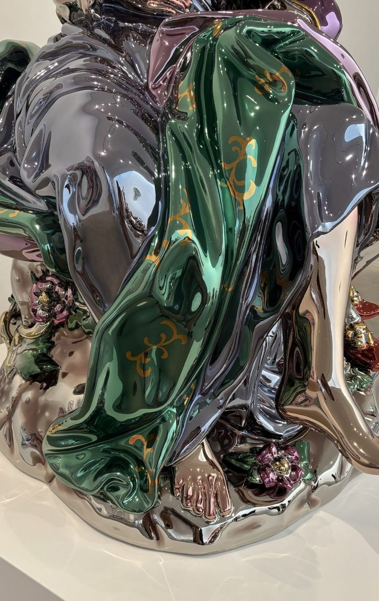
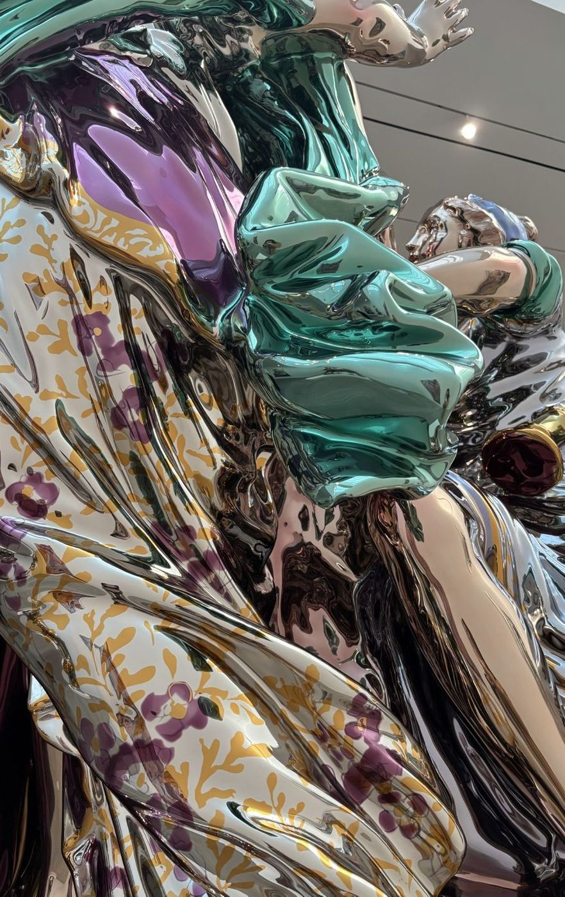

thoughts on porcelain series: Jeff Koons

Koons' Baloon Dog has been something I've encountered in furniture shops, "Galleries", and it had been an object of desire for a certain type of people I've known in my life. This is the kind of person who is into new money, luxury goods. Fast money culture. It has been something I'm opposed to.
The Koons dogs were accompained by clothes, covered in brand logos. Neon, flashy, golden gilded decorations, fuss for the sake of fuss. No vision, no intention. I felt these things symbolized a way of living that consumed but lack creating. Koons became a symbol of that for

me. But as I was experiencing his latest show Porcelain Series at Gagosian, I was able to understand his process and his way of thinking through material, scale and references more. What I saw was more than something quick, fast impression but a study of what we consider new, hype, traditional,
old. What does feel now and what does not, and What does the juxtaposition of all these elements create as a final work of art.. I found myself asking all these questions and more. Why did I dislike his work for so long... What did Koons represent for me bout the galleries, art fields overall that

Disturbed me for so long- I think Koons plays a great deal of this social game through his work and process. To analyze his working style with numerous assistants working for him through their specialty, this industrialized artisanship for a fine artist is what is also sought after in the creative industry
overall. I think at the core of my biases, the fear and rejection of industrializing the mind was playing a key element. But I felt something inside of me changing after seeing the show. I felt that intimacy does not come through observed non-chalance but it comes through the most clear execution of ideas.